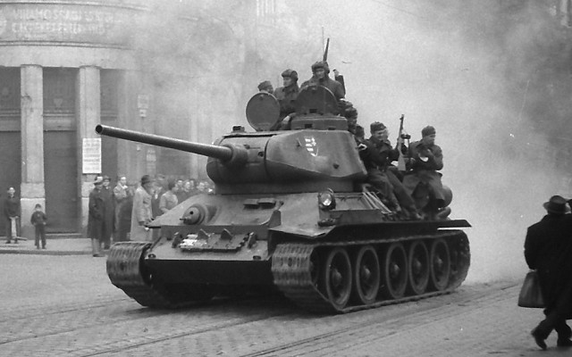

T-34-85
Giới thiệu
T-34-85 là phiên bản cải tiến quan trọng của dòng T-34, được trang bị pháo 85 mm và tháp pháo lớn hơn dành cho ba người.
Xe giữ lại ưu điểm về giáp nghiêng, xích rộng và khả năng sản xuất lớn, đồng thời cải thiện đáng kể hỏa lực và hiệu quả phối hợp của kíp lái.
Lịch sử phát triển
T-34-85 được phát triển sau khi T-34/76 gặp khó khăn trước các xe tăng Panther và Tiger của Đức. Phiên bản mới bắt đầu được sản xuất hàng loạt vào đầu năm 1944.
Nhờ quy trình sản xuất đã được tối ưu và số lượng lớn, T-34-85 trở thành một trong những phương tiện chủ lực của Hồng quân trong các chiến dịch tiến về Berlin.
Thông số kỹ thuật
| Quốc gia | Liên Xô |
|---|---|
| Phân loại | Xe tăng hạng trung |
| Thời gian phục vụ | Từ năm 1944 |
| Kíp lái | 5 người |
| Khối lượng | Khoảng 32 tấn |
| Động cơ | Diesel V-2-34 V12 |
| Công suất | Khoảng 500 mã lực |
| Tốc độ tối đa | Khoảng 55 km/h |
| Tầm hoạt động | Khoảng 300 km |
| Giáp | Khoảng 20–90 mm |
Vũ khí
- Pháo chính 85 mm ZiS-S-53.
- Hai súng máy DT cỡ 7,62 mm.
- Cơ số đạn pháo khoảng 55–60 viên.
Ưu điểm
- Sản xuất nhanh với số lượng rất lớn.
- Khả năng cơ động tốt trên nhiều loại địa hình.
- Pháo 85 mm đủ sức đối đầu nhiều mục tiêu bọc thép.
- Tháp pháo ba người cải thiện khả năng chỉ huy.
Nhược điểm
- Chất lượng hoàn thiện không đồng đều giữa các nhà máy.
- Tầm quan sát và tiện nghi kíp lái còn hạn chế.
- Giáp không đủ chống lại pháo chống tăng hạng nặng ở khoảng cách gần.
Các trận đánh và chiến dịch tiêu biểu
Chiến dịch Bagration
T-34-85 tham gia lực lượng thiết giáp Liên Xô trong cuộc tiến công lớn mùa hè năm 1944.
Budapest và Hungary
Xe được sử dụng rộng rãi trong các trận đánh ác liệt tại Hungary cuối năm 1944 và đầu 1945.
Trận Berlin
T-34-85 là một trong những loại xe tăng chủ lực tiến vào Berlin tháng 4 năm 1945.
Đánh giá tổng quan
T-34-85 cân bằng tốt giữa hỏa lực, cơ động, độ bền và khả năng sản xuất.
Sức mạnh lớn nhất của nó không chỉ nằm ở từng chiếc xe, mà còn ở khả năng được sản xuất và triển khai với quy mô rất lớn.